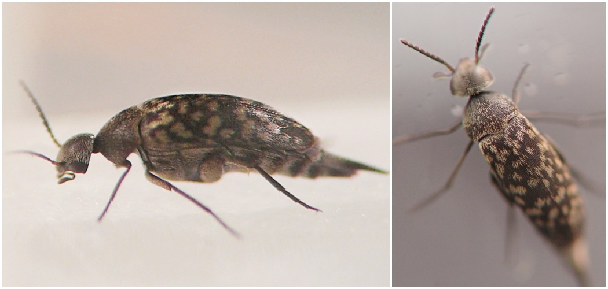

Stem borer (Coleoptera: Mordellidae) in Ageratina
| Record no.: | 0727 |
|---|---|
| Feeding guild: | Stem borer |
| Taxonomy: | Coleoptera: Mordellidae: cf. Mordellina pustulata |
| Stages observed: | trace, pupa, adult |
| Distribution observed: | IA |
| Hosts in Ageratina: | A. altissima (white snakeroot) |
I collected a pupa in its tunnel in an overwintered dead stem of the host in late May. The adult, which eclosed by June 6, bore mottling on the elytra similar to that of Mordellina pustulata (Mordellistenini). Adults identified as M. pustulata have been previously reared from Eupatorium perfoliatum, E. serotinum, and Eutrochium maculatum (Lisberg & Young 2003; Ford & Jackman 1996; Williams 1999), all of which share the tribe Eupatorieae with Ageratina (Compositae Working Group 2025).
See also record 0021 and the Ageratina stem insects compilation.

 Prev
Prev
{kind=link}
- Compositae Working Group (CWG). 2025. Global Compositae Database. Eupatorieae Cass.. Retrieved July 13, 2025 from https://www.compositae.org/gcd/aphia.php?p=taxdetails&id=1074859.[return to in-text citation]
- Ford, E.J. and J.A. Jackman. 1996. New larval host plant associations of tumbling flower beetles (Coleoptera: Mordellidae) in North America. The Coleopterists' Bulletin 50(4): 361-368.[return to in-text citation]
- Lisberg, A.E. and D.K. Young. 2003. An annotated checklist of Wisconsin Mordellidae (Coleoptera). Insecta Mundi 17(3-4): 195-202.[return to in-text citation]
- Williams, A.H. 1999. Fauna overwintering in or on stems of Wisconsin prairie forbs. Proceedings of the North American Prairie Conference 16: 156-161.[return to in-text citation]
Page created: February 9, 2026. Last update: March 30, 2026